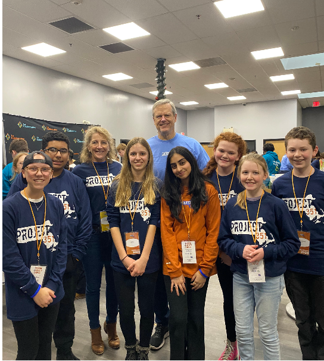
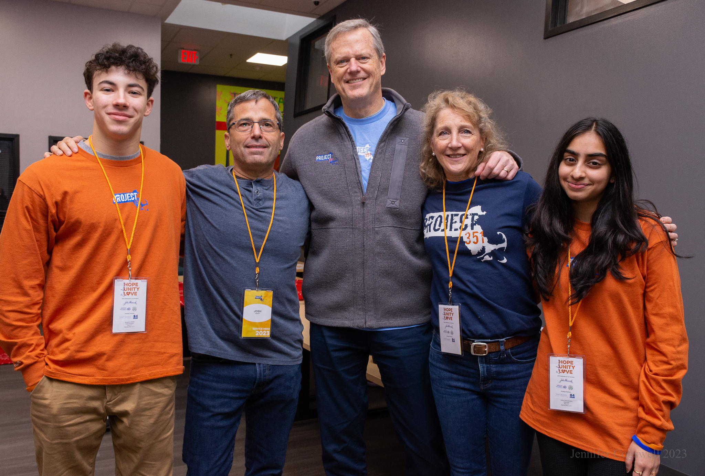
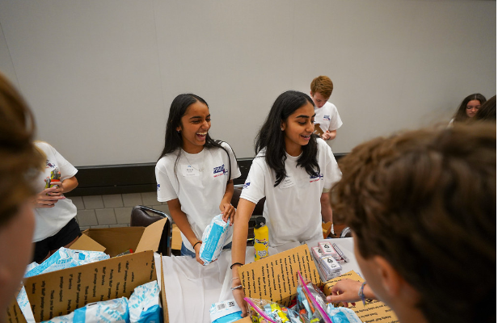
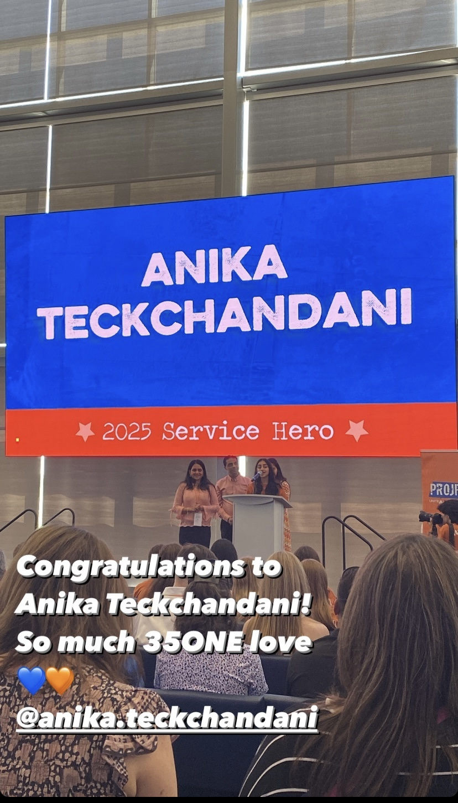
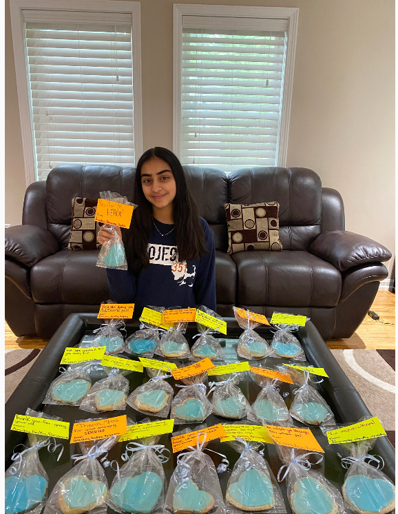

Community service has been a big part of my life, especially through my involvement with Project 351. Project 351 is a non profit organization that brings together young leaders from across Massachusetts to participate in service and make a difference in their communities. Being involved has allowed me to meet people from different backgrounds and develop friendships through volunteering.
My involvement with Project 351 has continued beyond my initial year as an ambassador. As an alum, I've had the opportunity to stay connected with the organization and participate in different service events. I've learned a lot about leadership, teamwork, and the importance of helping others through these experiences.
Over the years, I've participated in many community service initiatives, including Alternative Spring Break, 9/11 Tribute Service to honor the lives lost on 9/11, WBZ Anual Toy Service Day, food drives, and other projects through Project 351. Each experience has given me the opportunity to support different communities, meet new people, and take on leadership roles. Volunteering has been a meaningful part of my life, and I enjoy finding new ways to give back and stay involved.
One of the biggest lessons I've learned is that community service doesn't always have to involve something huge. Small actions make a meaningful difference, especially when people work together. I've also learned the importance of listening to others before speaking, being a good leader, and believing in the power young adults have to make a difference in the world.
I hope to continue volunteering throughout college and beyond. Service has introduced me to new communities, helped me grow as a leader, and given me opportunities that I'm grateful for. It's something I want to continue making time for in the future.
Here are some photos from my community service experiences and events over the years.









Here are some articles and stories highlighting community service projects I've been involved in.